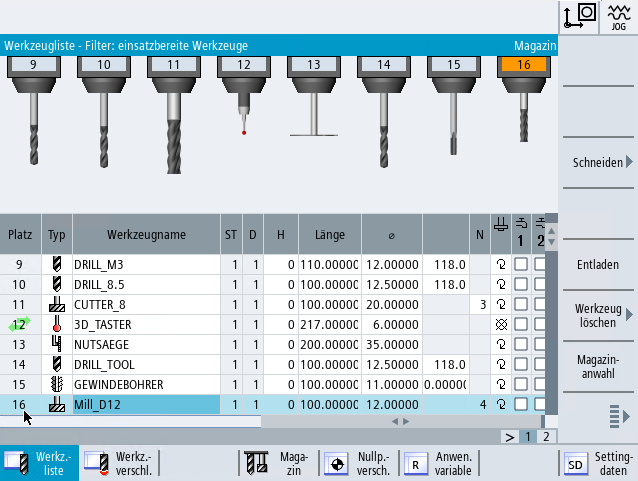
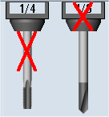

Zusätzlich zur Auflistung der Werkzeuge können Sie die Werkzeuge und Magazinplätze auch in einer dynamischen Grafik darstellen.
Dabei werden die Werkzeuge entsprechend der Listenreihenfolge in den richtigen Proportionen angezeigt.
Die grafische Darstellung muss vom Maschinenhersteller eingerichtet werden.
| | Maschinenhersteller Beachten Sie hierzu die Angaben des Maschinenherstellers. |
Weitere Informationen
Weitere Informationen zur Konfiguration finden Sie im Funktionshandbuch Werkzeugverwaltung.
Grafische Darstellung der Werkzeuge und Magazinplätze
Bei der grafischen Darstellung gilt Folgendes:
Wenn ein Werkzeug zu lang für die Anzeige ist, wird die maximal mögliche Länge abgebildet.
Übergroße Werkzeuge werden links und rechts beschnitten.
Werkzeuge, die sich nicht im Magazin befinden, werden ohne Werkzeugträger dargestellt.
Gesperrte Werkzeuge bzw. Magazinplätze werden durch ein rotes Kreuz gekennzeichnet:
|  |
| Hinweis |
Messwerkzeuge Typ 713 / 714Damit die Werkzeuge L-Taster und Sterntaster in der grafischen Werkzeugdarstellung angezeigt werden, geben Sie im Fenster "Weitere Daten" den zusätzlichen Parameter "Auslegerlänge" bzw. "Außendurchmesser" ein. |